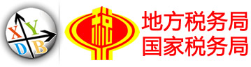

Large data storage and analysis services
For video surveillance, voice, image data, massive data processing large data needs of customers (have been applied to the traffic police, finance, securities, stock market, microblogging, micro-channel platform, e-commerce, research).
Data rentals and large data hosting
Providing classified data query interface or on behalf issued reports for advertisers, statistical agencies, investigative agencies, decision-making bodies, research institutes.
Internet data carrier services
Located in the fast data acquisition, online games, mobile Internet, embedded and Web applications. For game developers, publishers, training, BPO data delivery network operators.
Business Intelligence Applications
Provide new data on the wisdom of having a BI business intelligence software, such as smart office, smart customer relationship management.

